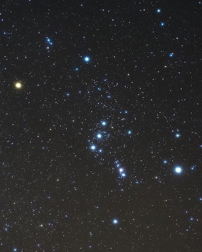
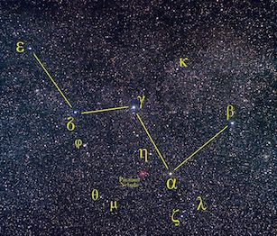

The stars

The night sky has always fascinated mankind
and the wonder of it can be enhanced for children by a little
explanation about what they are seeing. On a clear night,
where there are no lights around to hide them with reflected
glare, it is possible to see several thousand stars in the
sky. Against the bright sky in a city you may see only a few
dozen. This has the advantage that it is easier to pick out
the patterns made by the brightest stars. For example, The
Plough, which points to the pole star in the north. However,
it is worth taking children to a dark location, so they can
really appreciate the majesty of the night sky. If you have a
garden with no nearby lights then this will do very well. If
not, then try to take the opportunity of a trip to a rural
location to take a child outside on a clear night, away from
bright lights.
The first thing to say about stars is that they are all suns,
like our own Sun, but they are a very long way away. For
children who like numbers, it is interesting to put it this
way: light travels very quickly - about 186,000 miles each
second (just think about that, it is over 7 times round the
Earth's equator) - and it takes the light from the sun about 8
minutes to reach us. However, the closest star to us is so far
away that light from it takes over 4 years to reach Earth.
Light from some of the faintest stars we can see without a
telescope will have set out on its journey to our eye
thousands of years ago - before the oldest known human
civilisations appeared.
Stars are born when clouds of gas (mostly hydrogen) and dust
collapse under the force of their own gravity, becoming hot
enough to start nuclear reactions in their interior. These
reactions release huge amounts of energy which the star
radiates into space, mostly in the form of light. One of the
closest regions to us where stars are being born right now is
the great nebula in the constellation of Orion, which is shown
in the image on the left. Orion is visible during the winter
months in the southern sky, and is one of the most distinctive
constellations in the sky. It is named after a hunter from
Greek mythology, and has a prominent "belt" of three bright
stars, below which hangs a "sword". The Orion Nebula lies in
the middle of this sword. On a good, clear night you may be
able to see that one of the stars in the middle of the sword
looks fuzzy. A pair of binoculars or a small telescope will
make this much clearer (as well as showing that there are many
more stars in the sky than can be seen with the naked eye).
Here you are viewing a cloud in which stars are being born
right now, at a distance of about 1300 light years from us.
The stars we can see in the sky with our unaided eyes are just
those which are closest to us. The more distant stars are
concentrated in a huge band, the Milky Way, which
stretches right across the sky. You will need a dark sky to
see this band. Give your eyes time to adapt to the dark, and
then look for the constellation of Casseopeia, which contains
5 bright stars in a rather wonky W configuration - see the
image below to the right. The Milky Way
passes right through this constellation - look for a faint
milky white band which arcs across the sky from horizon to
horizon. You are looking at the light from billions of very
distant stars which are too faint to be discerned
individually, though a telescope will reveal some of them. Why
should they form a band across the sky? It is because we are
living inside a giant disk of stars (our Milky Way galaxy).
The bright stars in the sky are those within our local patch
of the disk, but the more distant parts of the disk form a
giant circle around us. Our galaxy is just one of billions
which we now know populate the Universe. You will need a
telescope to see any of these in the night sky, but you can
find many beautiful astronomical photographs of galaxies at
web sites such as this.